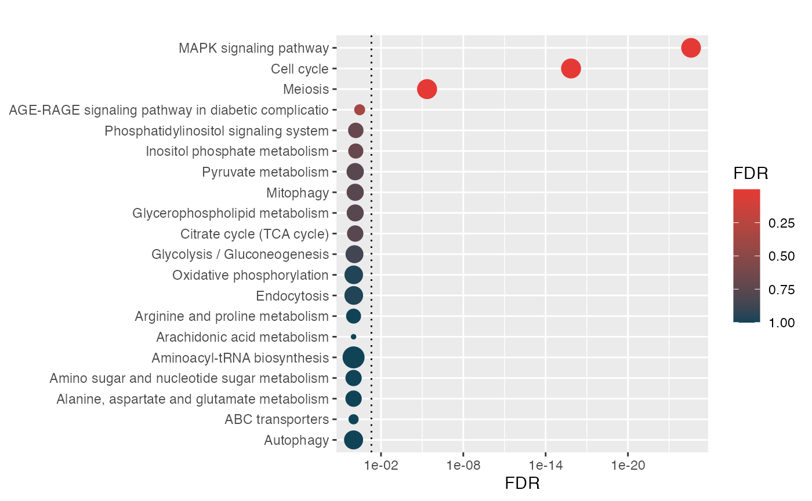

Working with interactive network objects makes it easy to perform interactive analyses in Shiny and continue in the command line for extending analysis where you left off.
yeast.networks <- readRDS(file.path(system.file("extdata", package="bieulergy"), "yeast-networks.rds"))Network objects are essentially undirected igraph objects with pre-computed graph and node level properties. Additionally, they allow a mapping of unique node identifiers to human-readable symbols. These symbols are typically gene or protein symbols. This allows for integrating enrichment-based analysis or incorporating node-level information into network analyses.
network <- yeast.networks[[1]]
print(network)IGRAPH bc54de4 UN-- 331 361 --
+ attr: name (v/c), symbol (v/c), is_tf (v/l), lfc_mrna (v/n), snp_frq
| (v/n)
+ edges from bc54de4 (vertex names):
[1] 749--751 749--109 109--107 109--119 109--117 109--114 109--110 109--112
[9] 743--692 692--694 692--212 740--737 740--452 737--454 737--637 452--454
[17] 452--460 452--458 452--456 452--167 454--401 637--601 735--702 702--529
[25] 733--398 398--167 717--256 256--251 715--288 288--285 711--442 442--443
[33] 708--747 708--707 704--177 704--176 177--176 529--530 212--215 212--217
[41] 212--213 690--544 544--545 688--234 234--241 234--235 234--239 234--237
[49] 686--215 686--298 215--618 215--581 215--414 215--309 215--217 215--192
+ ... omitted several edges
str(network)Classes 'interactive.omics.network', 'R6' <interactive.omics.network>
Public:
clone: function (deep = FALSE)
edges: data.frame
get.interactors: function (ids, degree = 1, remove.ids = TRUE, use.symbols = FALSE)
get.subnetwork: function (ids, degree = 1, indirect.edges = FALSE)
get.symbols: function (ids)
ig: igraph
init.edges: function ()
init.nodes: function (symbols = NULL, measures = c(), quiet = TRUE)
init.properties: function (measures = c(), quiet = TRUE)
initialize: function (ig, symbols = NULL, graph.measures = c("nodes", "edges",
nodes: data.frame
pca: PCA, list
plt.subnetwork: function (ids, degree = 1, indirect.edges = FALSE, use.symbols = FALSE,
print: function ()
properties: list
head(network$nodes) id symbol is_tf lfc_mrna snp_frq label degree eigen
749 749 MTH1 FALSE -0.4385177 0.035319994 749 2 2.661820e-07
751 751 SNF3 FALSE 0.1285503 0.003035238 751 1 5.257070e-08
109 109 LSM8 FALSE -0.5849400 0.062844766 109 7 1.295192e-06
743 743 ASN1 FALSE 1.1166966 0.229042875 743 1 2.299056e-04
692 692 SPC24 FALSE 0.2306554 0.009771783 692 3 1.164084e-03
740 740 GIP2 FALSE -0.5743279 0.060585153 740 2 2.958689e-03
betweenness stress
749 247.000 1361
751 0.000 0
109 3680.751 23693
743 0.000 0
692 493.000 617
740 1356.000 5772
head(network$edges) from to weight color
1 749 751 2 grey
2 749 109 2 grey
3 109 107 2 grey
4 109 119 2 grey
5 109 117 2 grey
6 109 114 2 grey
network$get.symbols(c("749", "109", "740"))[1] "MTH1" "LSM8" "GIP2"
network$get.interactors(c("109"))[1] "749" "107" "119" "117" "114" "110" "112"
network$get.interactors(c("109", "107"))[1] "749" "607" "119" "117" "114" "110" "112" "522" "106"
network$plt.subnetwork(ids=c("109", "107"))
network$plt.subnetwork(ids=c("109", "107"), indirect.edges=TRUE)
network$plt.subnetwork(ids=c("109", "107"), degree=3)
network$plt.subnetwork(ids=c("109", "107"), degree=3, use.symbols=TRUE)
network$plt.subnetwork(ids=c("109", "107"), degree=3, use.symbols=TRUE, node.color="degree")
network$plt.subnetwork(ids=c("109", "107"), degree=5, use.symbols=TRUE, node.color="degree", layout="layout_on_grid")
network$plt.subnetwork(ids=c("109", "107", "607"), degree=0)What if we have lots of multi-omics data we’d like to incorporate into the node/edge properties?
What if we wanted to test enrichment of biological pathways within a sub network?
library(hypeR)
genesets <- enrichr_download(genesets="KEGG_2019", db="YeastEnrichr")
signature <- network$get.interactors(ids=c("285"), degree=2, remove.ids=FALSE, use.symbols=TRUE)
head(signature)[1] "MCM1" "HSP150" "PIS1" "CDC6" "STE12" "STE2" 
head(hyp$data[,2:6]) pval fdr signature
MAPK signaling pathway 2.6e-27 2.5e-25 31
Cell cycle 3.0e-18 1.4e-16 31
Meiosis 1.4e-07 4.4e-06 31
AGE-RAGE signaling pathway in diabetic complications 1.5e-02 3.6e-01 31
Inositol phosphate metabolism 3.9e-02 6.9e-01 31
Phosphatidylinositol signaling system 4.2e-02 6.9e-01 31
geneset overlap
MAPK signaling pathway 114 16
Cell cycle 126 12
Meiosis 130 6
AGE-RAGE signaling pathway in diabetic complications 8 1
Inositol phosphate metabolism 21 1
Phosphatidylinositol signaling system 23 1